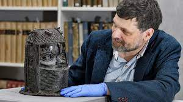

The University of Aberdeen says it will return a Benin Bronze to Nigeria within weeks, one of the first public institutions to do so more than a century after Britain looted the sculptures and auctioned them to Western museums and collectors.
The university said on Thursday that the sculpture of an Oba, or ruler, of the Kingdom of Benin, had left Nigeria in an “extremely immoral” fashion, leading it to reach out to authorities in 2019 to negotiate its return.
Pressure has mounted to return to their places of origin the Benin Bronzes – actually copper alloy relief sculptures – and other artefacts taken by colonial powers.
Neil Curtis, Aberdeen’s head of museums and special collections, said the Bronze, purchased in 1957, had been “blatantly looted” 124 years ago by British soldiers.
 “It became clear we had to do something,” Curtis said.
Britain’s soldiers seized thousands of metal castings and sculptures from the Kingdom of Benin, then separate from British-ruled Nigeria, in 1897.
“It became clear we had to do something,” Curtis said.
Britain’s soldiers seized thousands of metal castings and sculptures from the Kingdom of Benin, then separate from British-ruled Nigeria, in 1897.
Germany is in talks to return 440 Benin Bronzes as early as the autumn, according to newspaper reports, while the University of Cambridge’s Jesus College said it had finalised approvals in December to return one Bronze. Tijani said US museums would also return two more Bronzes.
The governor of Edo state, of which Benin City is the capital, plans to build a centre to store and study the returned artefacts by the end of 2021, and a permanent museum by 2025.
Artist and Edo state native Victor Ehikhamenor said he hoped the decision would prompt others to follow suit.
“Because some of these things are missing from our environment, people are not able to contextualise where we are coming from,” Ehikhamenor said.